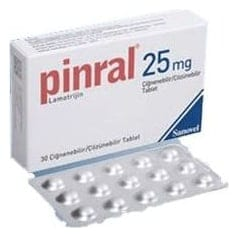

Pinral 25 mg Çiğnenebilir/Cozunebilir Tablet, 30 Tablet

Ne için kullanılır
KT · Bölüm 1PİNRAL, sara/epilepsi nöbetini önleyici ilaçlar adı verilen ilaç grubunun bir üyesidir. Beyaz renkte, yuvarlak tabletlerdir. Her kutuda 30 çiğnenebilir/çözünebilir tablet bulunur.
PİNRAL aşağıdaki durumlarda kullanılır: 2-12 yaş arasındaki çocuklarda sara hastalığının tedavisinde, kısmi nöbetlerde ve tonik- klonik nöbetleri (kasılma ve sarsılma ile giden nöbetler) ve Lennox-Gastaut Sendromu (farklı nöbet tiplerinin izlendiği özel bir sara hastalığı tablosu) ile ilişkili nöbetleri de içeren yaygın nöbetlerde diğer ilaçlarla birlikte kullanılır. Hastanın nöbetleri kontrol altına alındıktan sonra kullanıma tek olarak devam edilebilir. 2-12 yaş arasındaki çocuklarda tipik absans nöbeti (ani başlangıç ve bitişli simetrik nöbet) adı verilen sara tipinin tedavisinde tek başına kullanılır. 12 yaş üzeri çocuklarda ve yetişkinlerde sara tedavisinde, kısmi nöbetlerde ve tonik-klonik nöbetleri ve Lennox-Gastaut Sendromu ile ilişkili nöbetleri de içeren yaygın nöbetlerde diğer ilaçlarla birlikte olarak veya tek başına kullanılır. 18 yaş ve üzeri yetişkinlerde bipolar bozukluk (iki uçlu duygudurum bozukluğu) tedavisinde kullanılır.